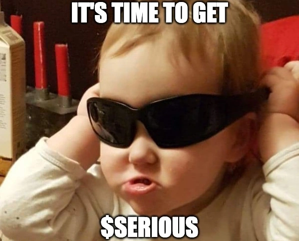
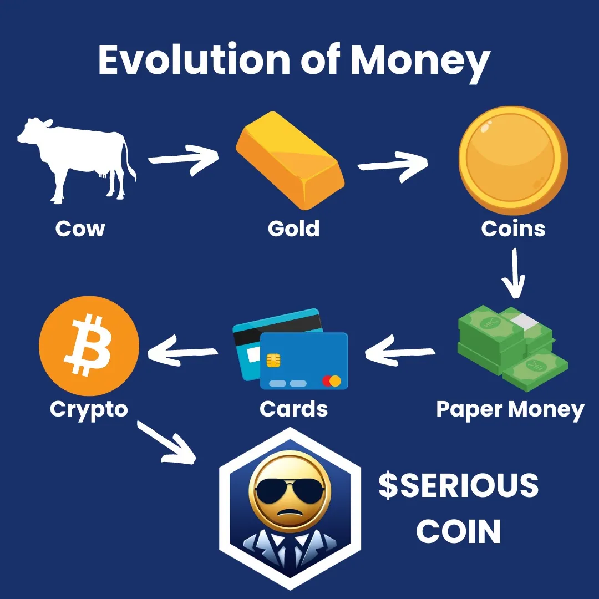

Introduction
Meme Coin Season is Over.
It’s Time to Get $SERIOUS
Serious Coin ($SERIOUS) is a serious project.
Utilizing revolutionary blockchain technology,
Serious Coin is recreating and redefining what a
“serious” investment looks like in the modern age.
Through simple and elegant design, clear articulation,
and efficient execution, the team at Serious Coin endeavors
to drive blockchain adoption and provide education in ways
that are fun and easily accessible to the masses.
If you’re tired of rug pulls, half-baked meme coin launches,
and gimmicky “utility” coins - join our community of serious
investors and participate in a serious project.

Serious Mission - Serious Values
In every project you take on in life, take it seriously.
Give it 100%.
Do it right.
Serious Coin is a Serious Project.
We’re serious about kindness.
We’re serious about community.
We’re serious about crypto.
We’re serious about memes.
Now let’s make some serious coin together 💰😎
Seriously Simple Tokenomics
50% of Supply: Public Pre Sale Launch (for serious investors only!)
35% of Supply: Liquidity Seeding (100% of LP tokens will be burned!)
15% of Supply: Marketing, Partnerships & Listings (no dev team payouts!)
Seriously Social Community
Community is the most important part of any project - seriously!
Your network is your net worth 💰
If you want to make some serious coin, surround yourself with serious people.
Our primary focus as a project is building a seriously awesome community. You can expect a well-moderated discord server and telegram group along with a consistently updated X account. We will host special events and giveaways and create opportunities for the community to step up with their own seriously awesome ideas. We aspire to create engaging educational material to help onboard new users onto Cronos chain and into the world of crypto and memes.
All serious investors are welcome to join us.
If you’re not serious, GTFO.
We don’t have time for that here.
Serious Roadmap
Phase 1: Serious Project Launch
- Presale & $SERIOUS Coin Launch
- Website, Discord, Telegram & X Account Launch
- Dexscreener Customization
- Coingecko & Coinmarketcap Applications
- Serious Airdrops & Giveaway Contests
Phase 2: Serious Expansion
- Building Community - Increasing Holder Base & Discord/Telegram Members
- Whitelist on VVS, WolfSwap & Others
- Partnerships with Cronos Projects
- Release of Free Educational Content
- Serious Marketing
Phase 3: Serious Domination
- Listed on Crypto.com & other CEX’s
- Serious Coin ETF
- Serious Coin becomes world reserve currency

Research shows that money has continued to become more serious over time. Financial analysts expect that trend to continue into the future. It’s time to get $SERIOUS
$SERIOUS is a meme coin with no intrinsic value or expectation of financial return.
It is completely useless and is solely for entertainment purposes.